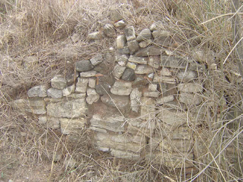
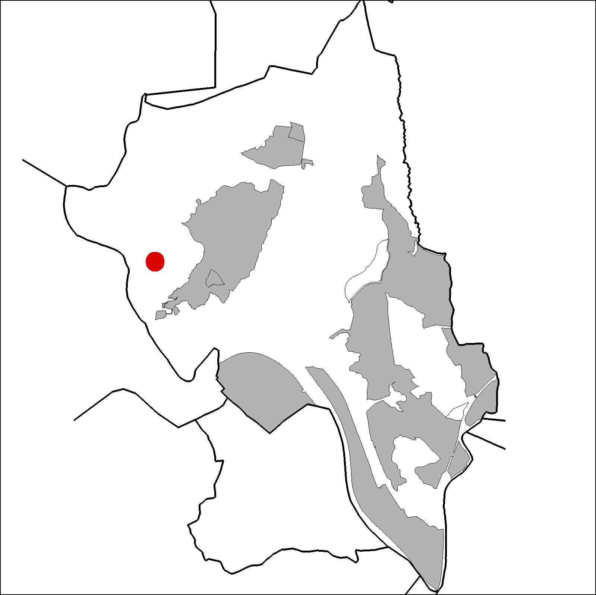

|  |  |
Nom de l’element: Can Margarit del Pont
Clau d’identificació: B.1.17
Nucli o indret: Turó de Salzes.
UTM: X= 411.532 Y=4.593.287
Referència cadastral: Poligon 13, parcel·la 78 (08053A013000780000DL)
Règim del sòl: Sòl no urbanitzable.
1.1. Època de construcció i tipologia:
Antiga casa pairal catalana, de la qual només en resten murs de pedra.
1.2. Estat de conservació:
En ruïnes.
1.3. Ús actual:
1.4. Accés:
Accés difícil des d’un camí que parteix del barri de Can Santeugini (carrer Tibidabo) o bé des de la carretera BV-1201.
Antiga masia catalana.
3.1. Usos admesos:
Habitatge rural (màxim 3 habitatges); residencial; hoteler (excepte aparthotel; i amb un màxim de 30 places); oficines i serveis; industria vinculada a productes del camp (industrial, categoria 1ª); educatiu; recreatiu cultural i social; recreatiu de restauració; esportiu.
3.2. Condicions d’ordenació:
Segons Pla Especial a redactar.
3.3. Accés i serveis:
Camí que parteix del barri de Can Santeugini (carrer Tibidabo) o bé des de la carretera BV-1201.